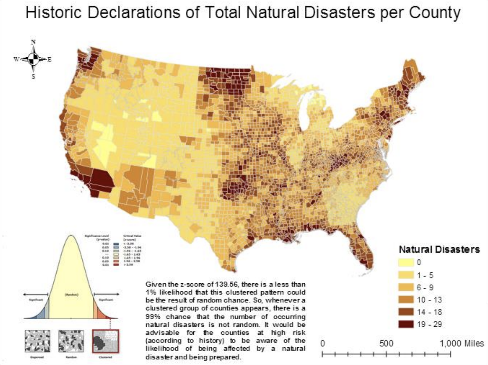

Recent University of Texas at Austin graduate and aspiring junior web developer living in Austin, Texas.
shayhoffman@gmail.com
Brief History
I was born in McAllen, Texas, a town located in deep south Texas, just a few miles north of the Texas/Mexico border. I graduated from high school with honors and went on to fulfill a longtime dream of attending my parents' alma mater, the University of Texas at Austin. Upon graduation, I decided to add to my identity capital through attending Austin Coding Academy to pick up a valuable life skill that will only appreciate in value in the future. I plan to complete their entire 3-module program, and proceed to either look for work as a junior web developer, or attend graduate or law school, and use my skills to deepen my understanding of my further studies. To learn more about me, please visit my LinkedIn page here.
Education
- University of Texas at Austin: Bachelor's in English and Geography
- Austin Coding Academy: Fullstack Developer Program
After graduating from McAllen high school in the top 10% of my class, I went on to study at the University of Texas at Austin. I first declared my Geography major, and eventually narrowed my focus of study to Geographic Information Science (or GIS), and Resources and Sustainability. I then proceeded to declare a second major the following year for English Literature, focusing mostly on British Literature. Through my GPA, I became eligible for the College of Liberal Arts Honors Program, which allowed me to graduate with an honors distinction, as well as study course material that was iconoclastic and leadership-focused. I finished my time at UT with an overall GPA of 3.7.
Portfolio/Media
Due to my eclectic studies at UT Austin, I have accumulated a wide range of projects and papers to show for my time there. The following projects represent some of my upper division, more comprehensive work as an Honors student, and as both a Geography major and an English major.
ArcGIS Proficiency
This portfolio of maps was created over the course of a summer through using the platform ArcGIS and data mining from various sources around the internet. Below is one example of several in my map portfolio. Click the map below to see more.
Work With ESRI StoryMap Application
The following link directs to ESRI StoryMaps, which is an ESRI application designed to create maps that use georeferencing to tell a story of some kind. This map details the trip I took two years ago to Seattle, Washington, using georeferenced photos through Flickr.
View my ESRI StoryMap Here!
Just English Major Things (Writing Samples)
During my time at UT, I completed over thirty hours of English-specific coursework in topics ranging from studying Shakespeare's plays to Modernism to works from the Romantic period. This entailed hundreds of hours of research and in-depth analysis of literary works, along with learning and honing the skill of crafting a scholarly, thoroughly- sourced paper. The following examples were created during my final two years of school. The first link is an extensively researched paper analyzing the impact of Jewish songwriters and artists on Christmas and Christmas songs as we know them. The second is an in-depth comparison of the characterization of women between the classic graphic novel, Watchmen, and its film adaptation.
Jews and Christmas paper
Graphic Novel paper
Other Interests/Extracurriculars
Apart from my academic pursuits (though sometimes stemming from them), I enjoy pursuing a wide range of activities and subjects. I grew up as a successful, competitive equestrienne who competed on the state-wide Texas circuit. Though I do not ride regularly anymore due to time constraints, I am interested in and firmly believe in horse rescue and the healing power of horses on physical, mental, and emotional issues. As a seasoned horsewoman, I am currently looking for a place to offer my skills in a voluntary capacity, particularly in the wake of Hurricane Harvey and the displacement of thousands of horses around the Houston area.
I read and write extensively, and try to read at least fifty books a year (though admittedly often fall short of that mark, though reaching this goal has been markedly easier since I am no longer an active English major). Genres of particular interest to me include but are not limited to: biographies of famous historical women, anything to do with the British Monarchy, happiness research and nonfiction, such as Gretchen Rubin's The Happiness Project, historical fiction, and high fantasy and scifi such as Game of Thrones.
Growing up in an avid football family, I also caught the basketball bug at 19, when my family moved to Oklahoma City around the same time the Seattle SuperSonics became the Oklahoma City Thunder. I rabidly follow the NBA, and enjoy reading sportswriter Royce Young in particular.
As a seventeen year old, I was also diagnosed with a disability called Postural Orthostatic Tachycardia Syndrome (or POTS for short). While not fatal, the quality of life is comparable to someone suffering from congestive heart failure and is more common than Multiple Sclerosis and Parkinson's Disease. However, due to its non-fatal nature, and the fact that it has been commonly mistaken for Chronic Fatigue Syndrome, the symptoms, side-effects, prognosis, and extensiveness of this disease have garnered very little interest or research. I am interested in furthering both awareness and the national conversation on this illness in particular, along with invisible illnesses in general. You can learn all about POTS Syndrome here.
I am also interested in raising awareness about one of the newer scourges of young people that is pornography addiction. Studies have shown this content has the same effect on the brain as more conventional drug addictions. You can learn more about it here.
Currently residing in Austin, Texas with my West Highland White Terrier, Indiana Jones (see below). General super-fan of coffee, sports, and trying as many restaurants as possible.